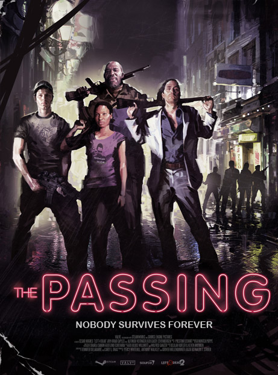
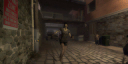
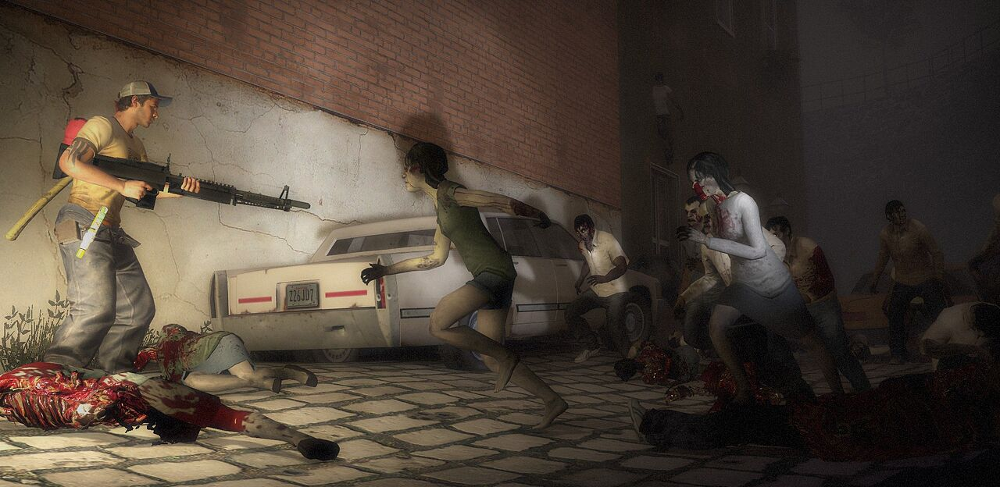
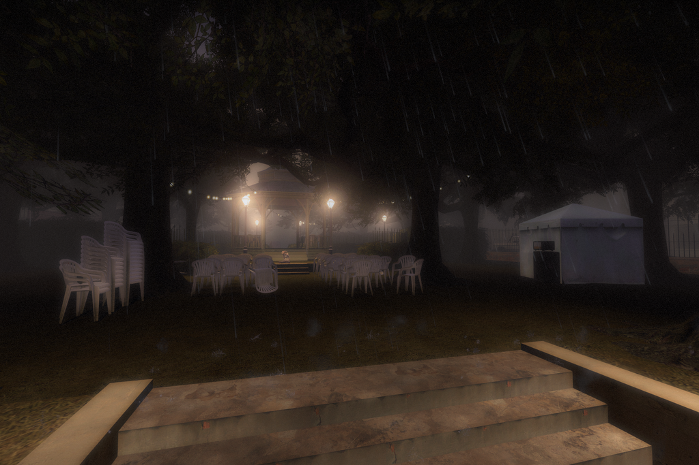
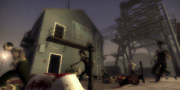

Campaña6
Campaña6
The Passing

Descripción:
The Passing es la primera campaña DLC en Left 4 Dead 2, tiene lugar entre Dead Center y Dark Carnival
y se desarrolla en la ciudad suburbana de Rayford, Georgia. en esta campaña hay un encuentro breve y casual
en el que cada grupo de supervivientes sigue su propia estrategia de supervivencia
Imagenes de la campaña:




-Volver a Campañas
-Anterior Campaña
-Siguiente Campaña